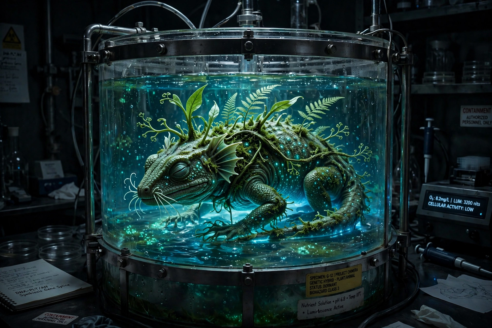

Biopunk (from "biology" and "punk") is a subgenre of science fiction that focuses on biotechnology. It is derived from cyberpunk but focuses on the implications of genetic engineering, synthetic biology and biological modification rather than information technology. Typically, biopunk fiction examines the dark side of genetic manipulation, with stories set in dystopian worlds where biotech corporations or governments control reproduction, human enhancement and engineered organisms, while black-market "biohackers" work outside the law.

| Genre | Science fiction subgenre |
|---|---|
| Origins | 1980s–1990s, from cyberpunk |
| Themes | Genetic engineering, cloning, synthetic biology, biohacking, corporate biotech |
| Notable works | Ribofunk (Paul Di Filippo); The Windup Girl (Paolo Bacigalupi); Schismatrix (Bruce Sterling) |
Where cyberpunk's hackers jack into cyberspace, biopunk's protagonists re-engineer flesh: designer babies, chimeras, tailored viruses, vat-grown organs and genehacked castes. Paul Di Filippo coined the related term "ribofunk" in the mid-1990s for biotechnologically themed fiction written with cyberpunk's stylistic intensity. Paolo Bacigalupi's Hugo- and Nebula-winning novel The Windup Girl (2009), set in a future Thailand dominated by agribusiness "calorie companies" and their engineered plagues, is often cited as biopunk's flagship. Margaret Atwood's MaddAddam trilogy and Richard Morgan's Altered Carbon novels also explore adjacent territory.
The term is also used for the real-life do-it-yourself biology and biohacker movements, whose community laboratories practise open-source genetic engineering outside institutional control. Critics and ethicists invoke biopunk scenarios in debates over CRISPR gene editing, synthetic genomics and the patenting of life forms.